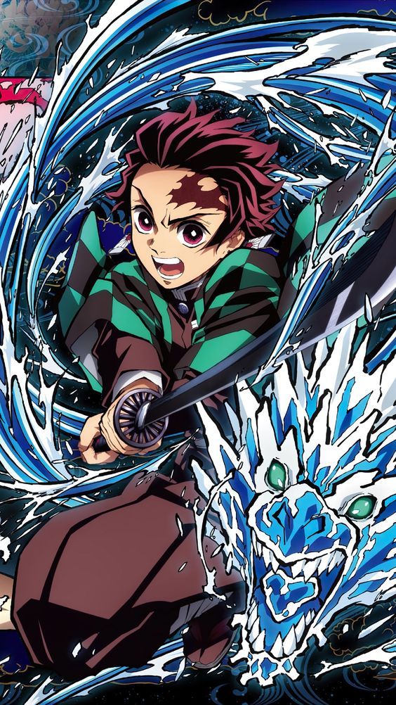
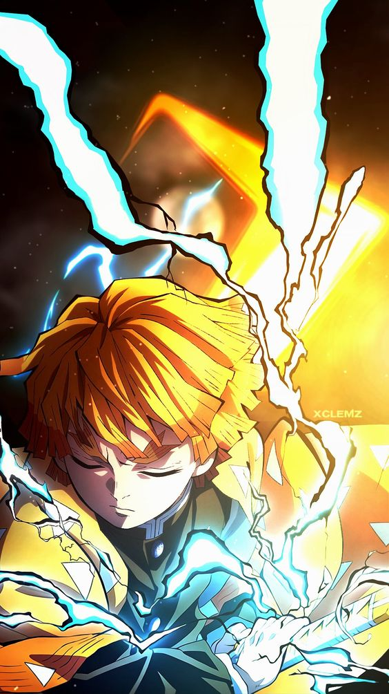
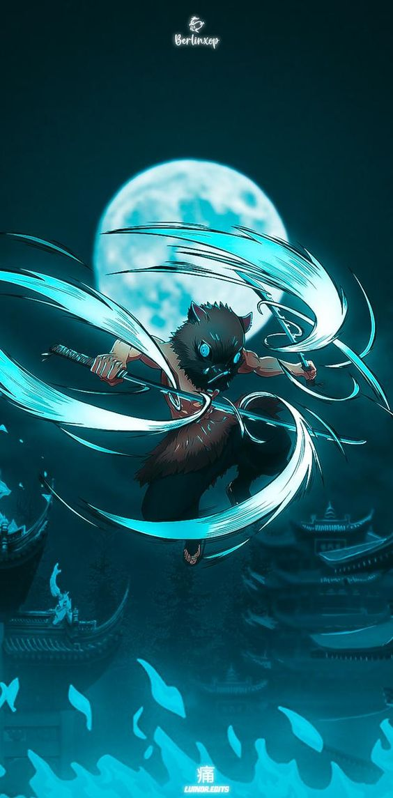

A história conta sobre um jovem que ganha a vida vendendo carvão até descobrir que sua família foi massacrada por um demônio, restando apenas sua irmã, Nezuko, que foi infectada e está se tornando um monstro. O protagonista, então, decide virar um caçador de demônios e buscar vingança.

Tanjiro
Ele é um membro de Kanoe dos Caçadores de Demônios, que se juntou a organização para caçar o responsável pelo assassinato de sua família e a transformação de sua irmã.

Zenitsu
Zenitsu é um membro de Kanoe dos Caçadores de Demônios, Ele é um companheiro de viagem e amigo de Tanjiro Kamado, sendo um dos principais protagonistas do Demon Slayer.

Inosuke
Inosuke é um Caçador de Demônios, sendo um dos amigos e companheiro de viagem de Tanjiro Kamado e um dos principais protagonistas de Demon Slayer.